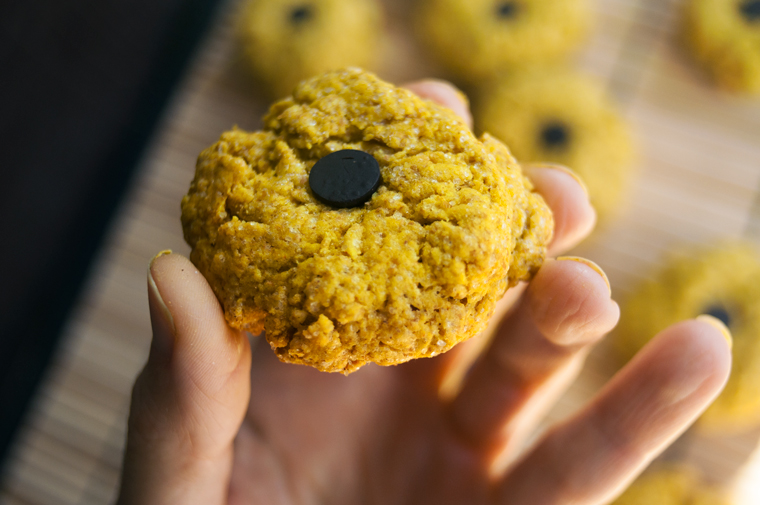

savoury turmeric cookies
16 servings — 30 minutes

These yellow treats will help brighten up cold, and grey winter days. Turmeric powder has a subtle taste, and will also do a good job of making your baked goods yellow!
In these cookies, I use spelt flour because it's more nutritious than wheat flour. Cookies aren't exactly high on the 'health food' scale though, that I know, but it's a way of sneaking in whole grains which can contribute to good health. When it comes to sugar, there are no true 'healthy' alternatives. Desserts are rare treats, and should be eaten in moderation. The same goes for oil. I used canola oil because it imparts little flavor, and because it's a source of omega3.

It's possible to use chocolate chips, but I like to use Carob chips because they lack bitterness and contain no caffeine. I'm a coffee drinker, I enjoy a good cup of coffee, but because an excess of caffeine can worsen my anxiety I try and limit my intake, and this includes chocolate products because they contain theobromine.
 all purpose flour 1/2 cup
all purpose flour 1/2 cup spelt flour 1/2 cup
spelt flour 1/2 cup baking powder 1/2 tsp
baking powder 1/2 tsp whole cane sugar 1/2 cup
whole cane sugar 1/2 cup canola oil 6 tbsp
canola oil 6 tbsp ground turmeric 2 tsp
ground turmeric 2 tsp dried orange peel 1 tsp
dried orange peel 1 tsp soy milk 6 tbsp
soy milk 6 tbsp carob chips 20
carob chips 20
cookies
- Preheat oven to 350F.
- Mix 1/2 cup of all purpose flour, 1/2 cup of spelt flour, 1/2 tsp of baking powder, 2 tsp of turmeric powder and 1 tsp of ground dried orange peels in a bowl. Stir well to mix.
- NOTE: You can make your own dried orange peels by keeping the peels of organic navel oranges, slicing then thinly, then drying them in an oven at 200F for 25-30 minutes. They keep 3 months in the refrigerator. You can grind them with a mortar and pestle for this recipe
- Cream 6 tbsp of canola oil with 1/2 cup of whole cane sugar in a separate bowl. Then. mix with the dry ingredients, gradually adding the soy milk 1 tbsp at a time until you get a soft and consistent dough.
- Line a baking sheet with a baking mat, make 16 little balls of dough and flatten each one gently. Add a carob chips at the center of each cookie.
- Bake for 15-20 minutes. Let cool, and serve with some tea!